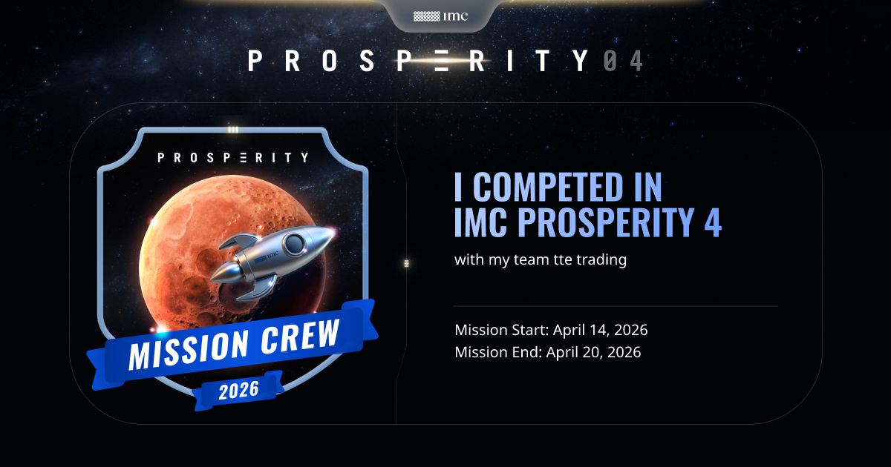

Economics & Bachelor graduate building toward roles in Quantitative Analysis and Investment Banking. This page collects the analytical work behind that direction.
MS Quantitative and Computational Finance Candidate, Georgia Tech Scheller College of Business — Seeking internship 2027.
At five years old, I was reselling sweets at a markup and explaining supply-demand dynamics to my mother. She was not impressed. My future employer, hopefully, will be. I am Elisabetta, a quantitative finance person with an unusual path: I started in economics, taught myself stochastic calculus, wrote a thesis extending Black-Scholes to Heston, Dupire and Merton. I also passed a semester at EM Lyon on many financial projects including one on callable bond pricing. I will be starting the QCF program at Georgia Institute of Technology in August. Along the way I spent time at Generali decoding telematics risk algorithms and competed in IMC Prosperity, where I discovered that losing money in a simulation is significantly less painful than losing it in real life. What I actually care about: markets and the intersection of mathematical rigor with macro intuition. I have the quant knowledge but what I want is to sit where the models meet the market. I want to understand why the curve moves, not just model it. I am currently seeking Summer 2027 internships and I'm still exploring where I'll land — market analysis, portfolio construction, investment banking. If you work in these fields more broadly and like people who ask too many questions, let's talk.
A derivation and analysis of the Black-Scholes framework from its martingale foundations, built on Itô's lemma, the Feynman-Kac representation, and Girsanov's change of measure.
Includes a Python and Bloomberg-based implementation, alongside a discussion of the model's limitations and its extensions (Heston, Dupire, Merton).
A full read of Under Armour's 2025 financial position: the shift to a net loss after a ten-quarter revenue decline, deteriorating liquidity and inventory turnover, and a DuPont breakdown of the negative ROE.
Concludes with an assessment of the company's ongoing turnaround plan and a "wait-and-see" recommendation, weighing internal restructuring against a difficult North American market.
A capital structure analysis of Wildwood Cola & Snacks, an all-equity firm considering recapitalization. Applies Modigliani-Miller propositions to quantify business risk, financial risk and the value of the interest tax shield across three proposed debt-to-capital scenarios (20%, 40%, 60%). Recommends a 40% debt-to-capital structure, balancing a substantial tax shield against credit quality and argues the case using trade-off and pecking-order theory alongside peer comparisons (PepsiCo, Snyder's-Lance).
A global, team-based trading competition run by IMC Trading, combining algorithmic and manual trading rounds in a simulated market. Competed as part of team tte trading, building and submitting Python-based trading strategies across the challenge's rounds.

Open to conversations!